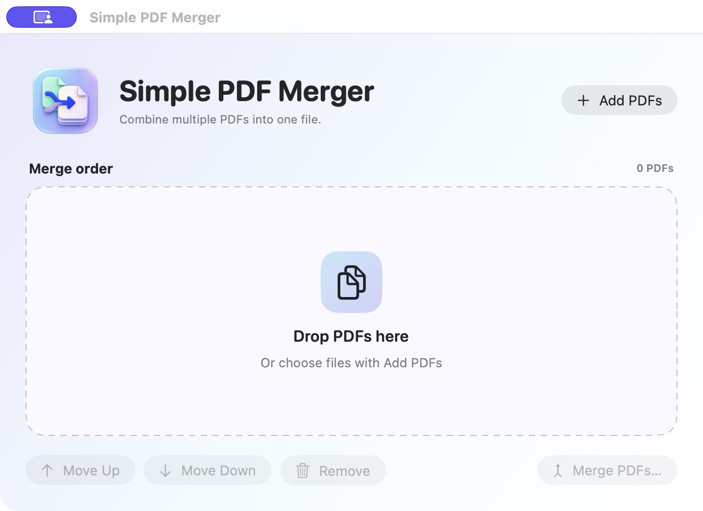

Merge PDFs on your Mac.
Drop in your PDFs, put them in order, and save them as one file. Everything runs locally on your Mac.
Download for macOSFree and open source · macOS 14+ · Apple silicon and Intel

Install on your Mac
Download the DMG from GitHub Releases, open it, and drag Simple PDF Merger into Applications.
Choose the order
Select a PDF and use Move Up or Move Down to arrange your files, then click Merge PDFs to choose where to save the result.